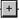

内容 |
pClampデータのプロット
1. plotpClamp iw:=[Book1]Sheet1;
2. plotpClamp stimulur:=1 septstim:=1;
| 表示 名 |
変数 名 |
I/O と データ型 |
デフォルト 値 |
説明 |
|---|---|---|---|---|
| 入力ワークシート | iw |
入力 Worksheet |
<active> |
pClampデータがインポートされるワークシートを指定します。この変数はXファンクションパネルで非表示になります。 |
| プロットするファイルを選択 | findex |
入力 int |
|
プロットするpClampファイルのインデックスを指定します。この変数はXファンクションパネルで非表示になります。 |
| グラフ内にタグを表示 | tag |
入力 int |
0 |
信号のグラフにタグを表示するかどうかを指定します。これは、インポートするファイルにタグがある場合のみ利用できます。 |
| 刺激の波形をプロット | stimulur |
入力 int |
0 |
刺激の波形をプロットするかどうか指定します。これは、インポートするファイルが刺激の波形である場合のみ利用できます。 |
| 別のグラフに刺激をプロット | septstim |
入力 int |
0 |
stimulus変数が1にセットされている場合のみ、この変数を利用できます。別のグラフに刺激の波形をプロットするかどうかを指定します。 |
| バリュー線の選択 | pickval |
入力 int |
1 |
信号グラフにバリュー線の選択を追加するかどうかを指定します。 |
| 軸スクロールバー | scrollbar |
入力 int |
1 |
信号グラフに水平軸スクロールバーを追加するかどうかを指定します。 |
| コントロールパネル | ctrl |
入力 int |
1 |
信号グラフにコントロールパネルを表示するかどうか指定します。 |
| 表示モード | mode |
入力 int |
Sweeps |
信号グラフの表示モードを指定します。
|
| プロット設定 | trsetting |
入力 TreeNode |
<unassigned> |
このオプションを使ってプロットするチャネルとエピソードを選択します。 |
| 信号のグラフ | plot |
出力 GraphPage |
<新規> |
信号のグラフを指定します。この変数はXファンクションパネルで非表示になります。 |
| 刺激の波形グラフ | waveform |
出力 GraphPage |
<optional> |
刺激の波形グラフを指定します。この変数はXファンクションパネルで非表示になります。 |
このXファンクションは、OriginワークシートにインポートされるpClampデータをプロットするのに使われます。これは、プロット作成のためのコントロールパネルを表示チェックボックスが imppClamp Xファンクションダイアログで選択されていると、自動的にXファンクションパネル内に開きます。
Pick values lineは、信号グラフに追加できる特殊な線です。選択されていないと、それは青い垂直線になって表れます。選択されていると、紫色になります。それを移動し、 ボタンをクリックし、現在のX値に対応する値を検出します。値は、PickedValues.という名前でワークブックに書き出されます。
下記の例は、異なる表示モード間の差を示します。
1. 新しいプロジェクトを作成します。
2. Originメニューから「ファイル：インポート：pClamp (ABF, DAT)」を選び、pClampダイアログを開きます。OriginプログラムフォルダにあるSamples\Import and Export\pCLAMP\に移動し、93310C08.DATを選択します。『オプションダイアログの表示』チェックボックスにチェックを付け、 OKをクリックします。「開く」をクリックします。これは、 imppClampダイアログを開きます。
3. OK をクリックして変換を実行します。 plotpClamp Xファンクションは、インポートしたデータを含むワークブックに接続しているXファンクションパネルに表示されます。
4. 表示モードを選択し、プロットボタンをクリックします。入力データに対するグラフが作成されます。
表示モードで Sweeps が選択されていると、
表示モードで Continuous が選択されていると、
表示モードで Concatenatedが選択されていると、